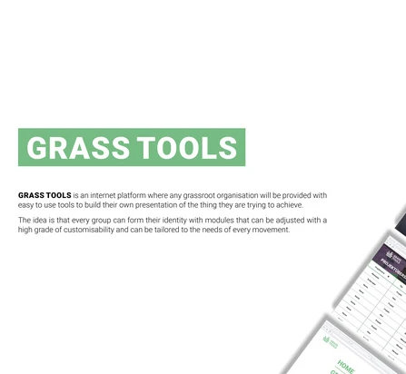

Projekte

Grassroot.app
Even though the news were full of sad stories lately, there were glimpses of hope: Acts
of kindness and solidarity started to appear wherever you looked. Young and healthy
people were helping members of the risk group with their daily lives. They bought
groceries, called elderly people who were feeling lonely, they were looking out for one
another. One thing became very clear: In time of crisis, the solidarity can be strong.
There was one thing more, though: An incredible amount of chaos and disarray. Whenever
people wanted to build “neighborly help” groups or any other grassroot movements, they
had to start from scratch. Tools like “Hilf-jetzt.ch” tried to help out, but at the end
of the day, the amount of time spent on organizing and structure was huge. In our eyes,
this is time that the grassroots should be spending achieving their actual goals. This
is where we jump in: Within this challenge we want to build a tool, that allows people
to easily create grassroots, find people who want to participate and be found by people
who are interested. By making the thresh-hold to start a grassroot as small as possible
and streamlining the build up process, we want to stick out and motivate people to
engage for the what the think is right. It is our core believe, that when people are
dedicated and motivated to achieve common good, the pathway should be paved smoothly.
What are the problems you’re trying to solve?
Folgende Technologien wurden dabei eingesetzt: